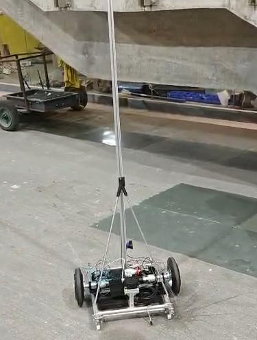

As part of Inter IIT Tech Meet 14.0, Eternal presented the challenge of building an autonomous warehouse rover capable of navigating storage aisles and supporting automated inventory scanning. Reliable navigation required the rover to understand its surroundings while continuously estimating its own position.
Autonomous Warehouse Rover
Building the SLAM and localization system for an autonomous warehouse robot designed to navigate storage aisles and automate rack-level inventory scanning.

The Challenge
My Contribution
I worked on the SLAM and localization pipeline, integrating RPLIDAR, IMU, and wheel odometry with ROS2 to generate a 2D representation of the warehouse and estimate the rover's pose. The resulting map and localization estimates were integrated with Nav2 for autonomous navigation, achieving approximately ±10 cm horizontal positioning accuracy during repeated motion tests.
How the Rover Worked
The rover used a differential-drive base equipped with a RPLIDAR, IMU, and wheel odometry, with a Raspberry Pi providing onboard computation. The complete system also included a vertically moving camera for QR-code-based inventory detection.
For mapping, I used SLAM Toolbox with the RPLIDAR to construct a 2D occupancy map. IMU and wheel-odometry measurements were fused using an Extended Kalman Filter (EKF) to obtain a more stable estimate of the rover's state.
RPLIDAR + IMU + Wheel Odometry → EKF → SLAM Toolbox → Map + Pose → Nav2
From Simulation to the Physical Rover
I first tested the mapping pipeline in a Gazebo warehouse environment using a CAD-based model. This allowed the lidar data, map generation, and localization behavior to be evaluated before deploying the system on the physical rover.
Once the map and localization pipeline were working, the generated map and pose information were used by Nav2 for path planning. The rover was tested on predefined routes and checkpoints, including obstacle avoidance and recovery behavior.
Results
Repeated motion tests achieved approximately ±10 cm horizontal positioning accuracy. The rover was able to use the generated map and localization estimates to navigate between predefined checkpoints while handling obstacles and recovery behavior.